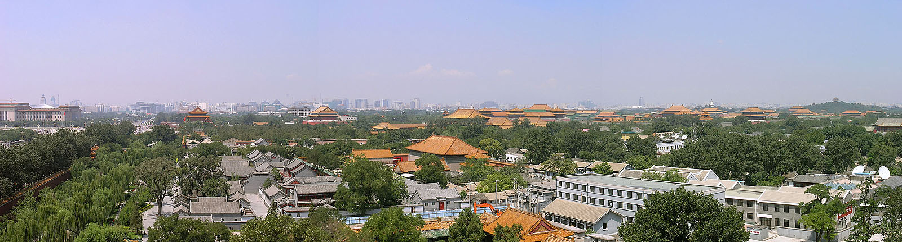

京
Winter in Beijing
홈
일정
숙소
명소·예약
항공편
예약·교통
출국 준비
참고 자료
2026.12.13–17 · 4박 5일
베이징 여행
선월드 호텔 왕푸징에서 출발하는 5일 일정
여행 일정 열기
준비 체크리스트

사진 Andi Buchner · CC BY-SA 3.0
관람
명소와 입장
이동
근교 투어
숙소
선월드 왕푸징
항공
왕복 항공편
날짜별 일정
타임라인
12.13
일
왕푸징 도착
15:20 서우두 도착 · 선월드 체크인
도착편
12.14
월
무톈위 만리장성 · 이화원
호텔 픽업형과 왕징 집결형 비교
투어 선택
12.15
화
천안문 · 자금성 · 경산공원
자금성 12월 8일 21:00 한국 시간 예매
예약 필요
12.16
수
천단공원 · 북경대 후보
북경대 방문 승인 시 오후 이동 · 기본안은 첸먼
승인 필요
12.17
목
체크아웃 · 귀국
11:15 호텔 출발 목표 · 15:35 서우두 출발
귀국편
먼저 할 일
전체 준비
지금 문의
북경대 12월 16일 입장 확인
외국 여권은 학교에 이메일로 문의
지금 비교
12월 14일 만리장성·이화원
두 명 탈 수 있는 전용차와 조인 비교
12.08 · 21:00 KST
자금성 12월 15일 입장권
두 사람의 여권으로 실명 예매
12.08부터 확인
천안문 광장 입장
광장 입장과 자금성 입장 동선 확인